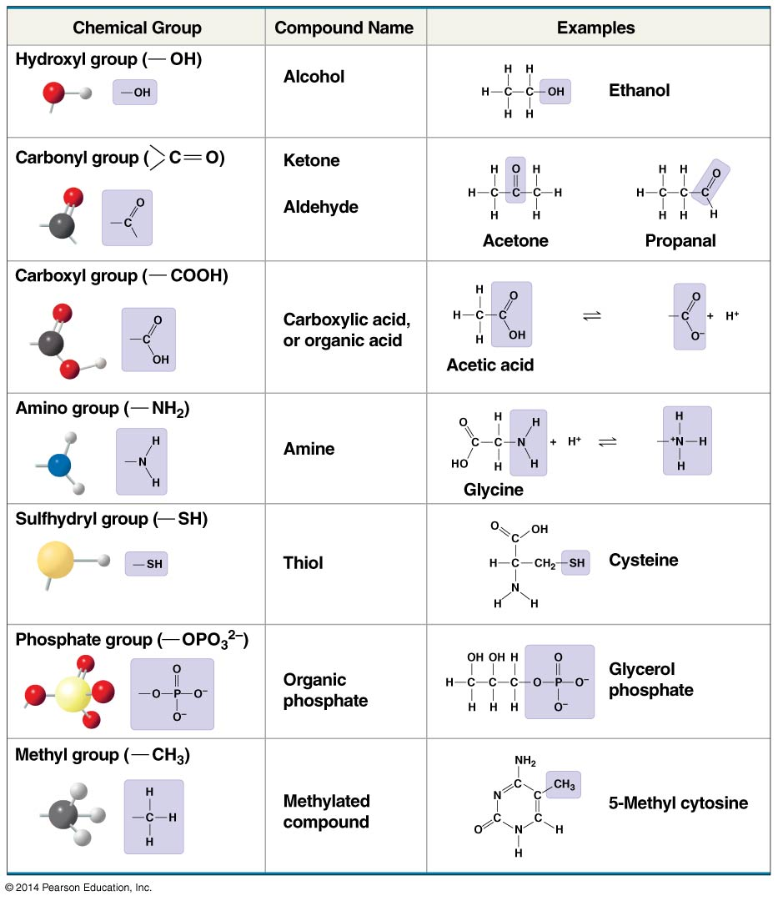
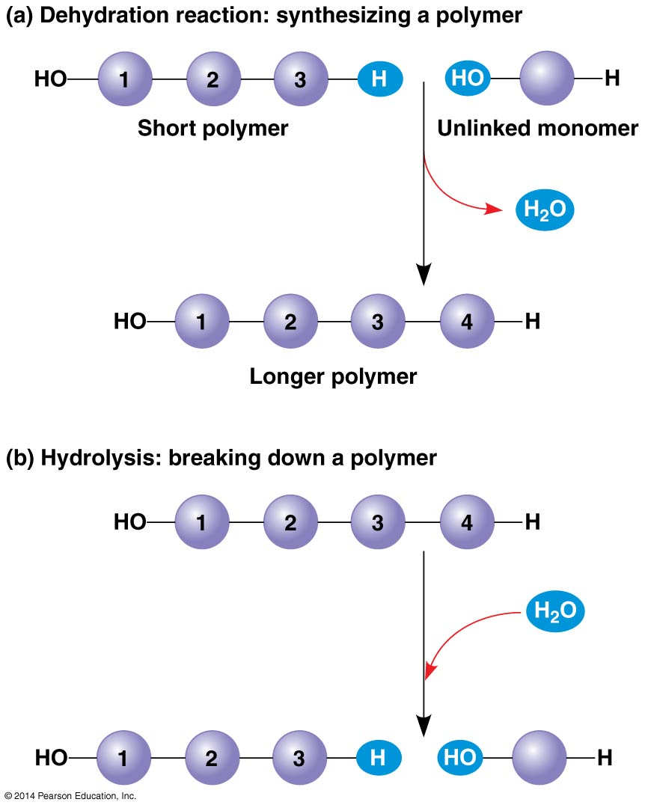
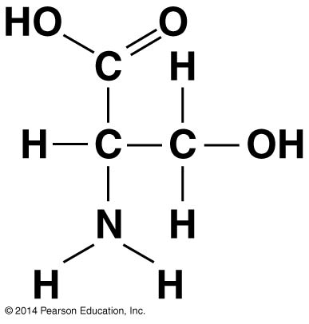

2 3 Carbon and the Molecular Diversity of Life
- Organic compound: a compound containing carbon-hydrogen bonds
2.1 3.1 Carbon
- Can form large, complex molecules by bonding to up to four other atoms †There’s some more
uselesschem discussed here, as well as in the unabridged textbook
2.1.0.1 Carbon skeletons:
- Source of molecular diversity:
- Vary in length and may be straight, branched, or arranged in rings
- May have double bonds, which vary in number and location
- Atoms of other elements can be bonded at available sites
- Hydrocarbons: organic molecules consisting of only carbon and hydrogen. Can undergo reactions that release a large amount of energy.
2.1.0.2 Chemical groups:
- Can replace one or more of the hydrogens bonded to the carbon skeleton of a hydrocarbon
- The number and arrangement of chemical groups give each organic molecule its unique properties

- In some cases, chemical groups contribute to function by affecting the molecule’s shape
- Functional groups: in other cases, some groups are directly involved in chemical reactions
- Methyl group is not reactive, serves as a biological tag
- Except for the sulfhydryl group, they are hydrophilic
2.1.0.3 Concept check
Concept check
- How are gasoline and fat chemically similar?
Both consist largely of hydrocarbon chains.
- What does the term amino acid signify about the structure of such a molecule?
It has both an amino group (—NH2), which makes it an amine, and a carboxyl group (—COOH), which makes it a carboxylic acid.
- Suppose you had an organic molecule such as cysteine, and you chemically removed the —NH2 group and replaced it with —COOH. How would this change the chemical properties of the molecule?
A chemical group that can act as a base (by picking up H+) has been replaced with a group that can act as an acid, increasing the acidic properties of the molecule. The shape of the molecule would also change, likely changing the molecules with which it can interact.
2.2 3.2 Macromolecules
- Polymer: long molecule consisting of many similar building blocks linked by covalent bonds
Monomers: the repeating building blocks of a polymer
2.2.0.1 Synthesis and breakdown:
- Facilitated by enzymes
- Dehydration reaction: two monomers are covalently bonded, with the loss of a water molecule. Each monomer contributes part of the water molecule that is released.
- Hydrolysis: bond is broken by the addition of a water molecule. Essentially the reverse of the dehydration reaction.

2.3 Test your understanding
Test your understanding
Which functional group is not present in this molecule?

- carboxyl ✗
- sulfhydryl ✓
- hydroxyl ✗
- amino ✗
- Which chemical group is most likely to be responsible for an organic molecule behaving as a base?
- hydroxyl ✗
- carbonyl ✗
- carboxyl ✗
- amino ✓
- phosphate ✗
- Which of the following categories includes all others in the list?
- monosaccharide ✗
- disaccharide ✗
- starch ✗
- carbohydrate ✓
- polysaccharide ✗
- Which of the following statements concerning unsaturated fats is true?
- They are more common in animals than in plants. ✗
- They have double bonds in the carbon chains of their fatty acids. ✓
- They generally solidify at room temperature. ✗
- They contain more hydrogen than do saturated fats having the same number of carbon atoms. ✗
- They have fewer fatty acid molecules per fat molecule. ✗
- The structural level of a protein least affected by a disruption in hydrogen bonding is the
- primary level. ✓
- secondary level. ✗
- tertiary level. ✗
- quaternary level. ✗
- All structural levels are equally affected. ✗
- Which of the following hydrocarbons has a double bond in its carbon skeleton?
- C3H8 ✗
- C2H6 ✗
- CH4 ✗
- C2H4 ✓
- C2H2 ✗
- The molecular formula for glucose is C6H12O6. What would be the molecular formula for a polymer made by linking ten glucose molecules together by dehydration reactions?
- C60H120O60 ✗
- C6H12O6 ✗
- C60H102O51 ✓
- C60H100O50 ✗
- C60H111O51 ✗